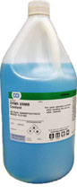
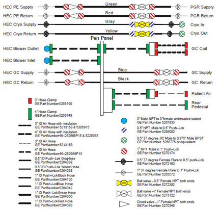
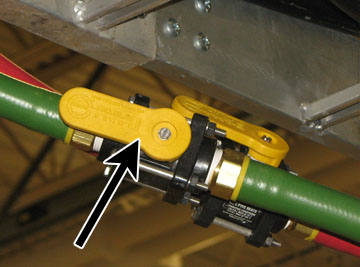
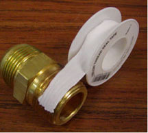
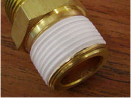
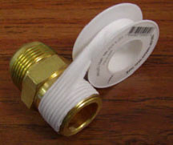
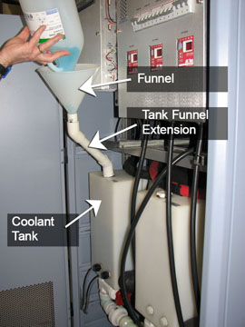
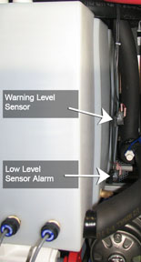
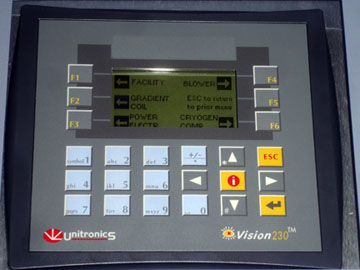

Operating Documentation
Direction 5670000, Rev# 1
Optima MR450w 1.5T Service Methods
Module Version 15.0, Version Date 2/10/10
Operating Documentation |
| Required Persons | Preliminary Reqs | Procedure | Finalization |
|---|---|---|---|
| 1 | Not Applicable | 90 mins | Not Applicable |
The HEC Coolant Fill and Coolent Leak Check procedure demonstrated how to properly fill the Gradient Coil and Power Electronics tanks with a deionized water solution within the HEC (Heat Exchange Cabinet). Usually, the Gradient Coil tank is filled before the Power Electronics tank.
IMPORTANT: Examine the two Ball (shut-off) Valves and two Check Valves for leaks prior to filling the system with coolant to avoid potential equipment damage and customer dissatisfaction.
| Item | Qty | Effectivity | Part# | Manufacturer | |
|---|---|---|---|---|---|
| 5 gallon Pail | 1 | - | - | - | |
| Item | Qty | Effectivity | Part# | Manufacturer | |
|---|---|---|---|---|---|
| Coolant (see Step ) | 60 one-gallon containers Illustration 1: One Coolant Gallon 
| - | 5174313 | - | |
| Paper Towels (white) | 1 roll | - | - | - | |
| Duct Tape | As required | - | - | - |
| ||||
| Do not ingest the coolant fluid. | ||||
| The fluid is treated for bacteria and corrosion. | ||||
| fluid is not intended for human consumption. |
| ||||
Observe the following:
| ||||
| Condition | Reference | Effectivity |
|---|---|---|
Shut-off (ball) valves are open. | - | - |
Hose connections are secure. | - | - |
Ensure the hose connections are secure from the HEC to the Power, Gradient and RF (PGR) Cabinet and from the HEC to the Gradient Coil.
Check both Ball (shut-off) and Check Valve connections to ensure they are tightened properly. (If either can be hand tightened, they are too loose.)
Make sure the Teflon® tape is applied properly as shown in Illustration 5.
| NOTE: | All the shut-off valves must be open before the tanks
can be filled with coolant. See Illustration 2 for valve locations.
|
Illustration 2: HEC Coolant Schematic

To view a high-resolution image of this schematic, refer to Direction 5500102, MR750 3.0T System Installation.
Illustration 3: Shut-Off (Ball) Valves

| NOTE: | The shut-off valves in this illustration are shown open. When the handle is perpendicular to the hose, the valve is closed. |
If there is an issue with any of the connections, retighten or reapply new Teflon tape as needed before adding any coolant to the system.
For applying new Teflon tape, start one thread in from the end of the male NPT fitting as shown in Illustration 4. Doing so will prevent tape from entering the fluid passage.
Illustration 4: Application of Teflon Tape

Because Teflon tape is not adhesive-backed, hold the end of the tape with a finger until one full wrap is completed. Wind the tape in a clockwise direction (as viewed from the end of the fitting). This will ensure that the installation of the mating components will result in wrapping the tape in the same direction and not unraveling or unwinding it.
Illustration 5: Correct Application of Teflon Tape

After the first wrap, continue wrapping in a clockwise direction with moderate tension applied to the tape roll. Overlap the prior layer by a half width of the tape as shown in Illustration 6. This will ensure two layers of tape cover all threads of the fitting.
Illustration 6: Teflon Tape - Overlap

For each of the valves (ball and check), wrap the white paper towel around the entire joint, and tape it securely to the hose. Be sure to use white paper towels. (This will help distinguish between a leak, indicated by a blue liquid, and condensation, a clear liquid.)
Unscrew the top of the tank.
Insert the tank funnel extension and funnel into the opening on top of the tank.
Pour the coolant into the funnel to fill the tank.
Fill the tank to approximately 7 in. (180 mm) from the top to allow room for expansion. (This is equivalent to approximately 2 inches above the Warning Level Sensor.)
Illustration 7: Filling Coolant Tank

| NOTE: | There are two sensors on the right side of each tank shown below. The top sensor is a Warning Level Sensor that notifies the operator when the coolant is low. The lower sensor on the right of the tank is a Low Level Alarm that signals the operator when the coolant reaches a dangerously low level and will stop scanning. |
Illustration 8: Coolant Sensors

For each tank, press and hold the ▲, while pressing the appropriate function key (shown in the table) on the HEC Pump Control Panel shown in the illustration. (This sequence activates the pump to fill the hoses with coolant and turns the pump on and off.)
Table 1: Pump Control Panel Key Sequence
| Tank | Key Sequence |
| Gradient Coil | ▲ F2 |
| Power Electronics | ▲ F3 |
Illustration 9: HEC Control Panel

Repeat Step 4 through Step 6 until the next tank level is stabilized, about 7 in. (180 mm) from the top of the tank, signifying the cooling loop is completely filled with coolant.
Screw cap onto the top of the coolant tank.
Turn on the pumps using the key sequence described in , and allow the system to run for 30 minutes.
Proceed to the next section, Coolant Leak Check.
After the system runs for about 30 minutes, check each of the paper towels for evidence of a coolant leak.
| NOTE: | A coolant leak will show up as blue and it is important to differentiate this from normal condensation, which will be clear. |
| ||||
| Do NOT turn off the Variable Frequency Drive (VFD) from the circuit breaker unless the VFD is stopped (display shows zero value). | ||||
| This can ruin the hardware, and cause extreme failure due to a short circuit. | ||||
| Stop the VFD from the HEC Control Panel prior to powering down the circuit breaker. |
If a leak is found, turn off the pumps at the bottom of the HEC. For each tank, hold down the keys (shown in Table 1) simultaneously on the HEC Control Panel (Illustration 9). This sequence activates the pump to fill the hoses with coolant and turns the pump on and off.
Proceed to the next section, Coolant Leak Troubleshooting.
If a leak is found in one or more of the valves, review the following steps:
Problem: Teflon tape is applied incorrectly (not consistently covering threads or torn).
Solution: Remove existing Teflon tape. To access the Check or Ball Valve with faulty Teflon tape, see Draining Guidelines for Hoses External to HEC. Replace the tape on the valve by following Valve Check and Coolant Fill, Step 2.a through Valve Check and Coolant Fill, Step 2.c.
Problem: Valve connection is improperly tightened. This can be caused if the connection is too loose or the connection is overtightened (causes a fitting to break).
Solution: If the connection seems to be loose, hand tighten the fittings, turn the wrench three turns. (Do not overtighten, and make sure the leak stops.)
Inspect the valve for damage and replace as necessary.
If a replacement is required, refer to Draining Guidelines for Hoses External to HEC before disconnecting any valves.
Once the issue is properly resolved, ensure the coolant system is functioning properly.
Fill the system with coolant as specified in Valve Check and Coolant Fill.
Turn on the pump drives from the HEC Control Panel shown in Illustration 9, using the keys in Table 1 for the appropriate commands.
Check for leaks at all hose connections, especially the connection just repaired. (See Illustration 2 for connection locations.)
This section contains draining techniques when troubleshooting a leak at the Check Valve (P/N 5270346).
Isolate PGR or Gradient Coil lines by shutting off both the Supply and Return 1 in. Ball Valves (P/N 5273122); locations shown in Illustration 2. The maximum volume can be calculated with the following equation:
Maximum volume of fluid in 1 in. hose = (0.4909 x L) Liters, where L = length of hose in meters and 1 gallon = 3.78 liters.
Lift the hose with the Check Valve to drain as much fluid as possible back into the HEC.
| ||||
| It may be helpful to kink the hose before unthreading the fitting from the Check Valve. | ||||
Unthread the leaking side of the Check Valve from the fitting, and drain the fluid into the pail.
This section contains draining techniques when troubleshooting a leak at the Ball Valves (P/N 5272392).
Isolate PGR or Gradient Coil lines by shutting off both the Supply and Return Ball Valves (P/N 5273122). Refer to Illustration 2 for the ball valve locations.
Kink the appropriate hose to isolate the fluid. If kinking is not enough to hold the volume of fluid between the Ball Valve and the source, either drain into a pail or the Gradient Coil.
Use a pail to drain the fluid between the Check and Ball Valves. The maximum volume can be calculated with the following equation:
Maximum volume of fluid in 1 in. hose = (0.4909 x L) Liters, where L = length of hose in meters and 1 gallon = 3.78 liters.
Lift the hose with the Ball Valve to drain as much fluid as possible.
Unthread the leaking side of the Ball Valve from the fitting.
This section contains draining techniques when troubleshooting a leak at the Ball Valve (P/N 5272392).
Isolate the Cryogen Compressor lines by shutting off both the facility Supply and Return 1/2 in. Ball Valves contained within the HEC.
Kink the appropriate hose to isolate the fluid. If kinking is not enough to hold the volume of fluid between the ball valve and the source, use a pail to drain the fluid. The maximum volume can be calculated with the following equation:
Maximum volume of fluid in 0.5 inch hose (Cryogen Compressor) = (0.12272 x L) Liters, where L = length of hose in meters and 1 gallon = 3.78 liters.
Lift the hose with the Ball Valve to drain as much fluid as possible.
Unthread the leaking side of the ball valve from the fitting.
When finished filling the tanks with coolant, place the funnel and tank funnel extension at the bottom of the HEC.
Keep any unused coolant for future use.
After the procedure is completed, view the hose connections closely to check for any leaks.
Check the hoses a second time after a few days (during installation) for any possible leaks.